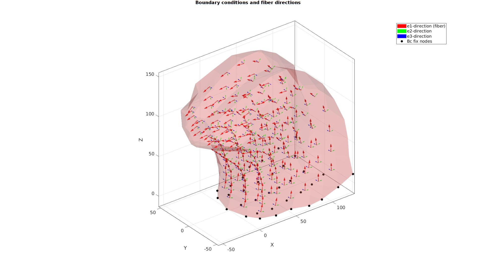

DEMO_febio_0024_active_contraction_tongue
- Importing geometry for a basic tongue model
- Assigning fiber directions
- Defining the boundary conditions
- Coding the febio structure
- Running the model
- Importing and visualizing results
Contents
Keywords
- febio_spec version 4.0
- febio, FEBio
- pressure loading
- hexahedral elements, hex8
- tongue
- static, solid
- Active contraction
- hyperelastic, Ogden
- displacement logfile
clear; close all; clc;
Plot settings
fontSize=15;
markerSize=25;
markerSize2=20;
plotColor='rw';
vectorPlotSize=10;
Control parameters
% Path names defaultFolder = fileparts(fileparts(mfilename('fullpath'))); savePath=fullfile(defaultFolder,'data','temp'); % Defining file names febioFebFileNamePart='tempModel'; febioFebFileName=fullfile(savePath,[febioFebFileNamePart,'.feb']); %FEB file name febioLogFileName=[febioFebFileNamePart,'.txt']; %FEBio log file name febioLogFileName_disp=[febioFebFileNamePart,'_disp_out.txt']; %Log file name for exporting displacement %Material parameter set c1=1e-3; %Shear-modulus-like parameter m1=2; %Material parameter setting degree of non-linearity ksi=c1*100; %Fiber "modulus" alphaPar=1e-20; beta=3; k_factor=1e2; %Bulk modulus factor k=0.5.*(c1+ksi)*k_factor; %Bulk modulus T0=10e-3; %Active stress % FEA control settings numTimeSteps=10; %Number of time steps desired max_refs=25; %Max reforms max_ups=0; %Set to zero to use full-Newton iterations opt_iter=6; %Optimum number of iterations max_retries=5; %Maximum number of retires dtmin=(1/numTimeSteps)/100; %Minimum time step size dtmax=1/numTimeSteps; %Maximum time step size runMode='external';% 'internal' or 'external'
Set up geometry for the tongue model
% Import model geometry. This geometry was obtained with permission from the Artisynth project (https://www.artisynth.org/Demo/BiomechanicalTongueModel) loadNameOff=fullfile(defaultFolder,'data','OFF','tongue_mesh.off'); %File name for off file [E,V] = import_off(loadNameOff); %Import mesh data [F,~]=element2patch(E,[]); %Get mesh faces for visualization
Visualize imported mesh
% Plotting model cFigure; hold on; gtitle('Tongue model geometry',fontSize); gpatch(F,V,plotColor,'k',0.5); %Visualize mesh faces % patchNormPlot(F,V); %Visualize normal directions axisGeom(gca,fontSize); camlight headlight; drawnow;

Defining fiber directions and boundary conditions
Fiber directions are here defined as running from the bottom of elements to the top of elements, this is not physiological.
%Get boundary faces [indBoundary]=tesBoundary(F,V); %Get boundary face indices Fb=F(indBoundary,:); %Boundary faces %Get top and bottom faces for boundary conditions F_element_bottoms=E(:,[1 4 8 5]); %Get element bottom faces F_element_tops=E(:,[2 3 7 6]); %Get element top faces X=V(:,1); Y=V(:,2); Z=V(:,3); % Nodal coordinate components %Compute element centre coordinates (used as fiber origins in visualization) [VE]=patchCentre(E,V); %Define fibers as going from one face center to the other e1_dir_bottom=patchCentre(F_element_bottoms,V); %Middle of bottom faces e1_dir_top=patchCentre(F_element_tops,V); %Middle of top faces e1_dir=vecnormalize(e1_dir_top-e1_dir_bottom); %Normalized fiber vectors [e2_dir,e3_dir]=vectorOrthogonalPair(e1_dir); %Get orthogonal vector pair %Get boundary directions faces to set-up support F_bottom=F_element_bottoms(all(ismember(F_element_bottoms,Fb),2),:); %The faces at the bottom bcSupportList=unique(F_bottom(:)); %The node list for the bottom nodes
Warning: Second input (vertices) no longer required. Update code to avoid future error.
Visualize boundary conditions
cFigure; hold on; gtitle('Boundary conditions and fiber directions',fontSize); gpatch(Fb,V,plotColor,'none',0.25); hf(1)=quiverVec(VE,e1_dir,10,'r'); hf(2)=quiverVec(VE,e2_dir,5,'g'); hf(3)=quiverVec(VE,e3_dir,5,'b'); hf(4)=plotV(V(bcSupportList,:),'k.','MarkerSize',markerSize); legend(hf,{'e1-direction (fiber)','e2-direction','e3-direction','Bc fix nodes'}); axisGeom(gca,fontSize); camlight headlight; drawnow;
Defining the FEBio input structure
See also febioStructTemplate and febioStruct2xml and the FEBio user manual.
%Get a template with default settings [febio_spec]=febioStructTemplate; %febio_spec version febio_spec.ATTR.version='4.0'; %Module section febio_spec.Module.ATTR.type='solid'; %Control section febio_spec.Control.analysis='STATIC'; febio_spec.Control.time_steps=numTimeSteps; febio_spec.Control.step_size=1/numTimeSteps; febio_spec.Control.solver.max_refs=max_refs; febio_spec.Control.solver.qn_method.max_ups=max_ups; febio_spec.Control.time_stepper.dtmin=dtmin; febio_spec.Control.time_stepper.dtmax=dtmax; febio_spec.Control.time_stepper.max_retries=max_retries; febio_spec.Control.time_stepper.opt_iter=opt_iter; %Material section materialName1='Material1'; febio_spec.Material.material{1}.ATTR.name=materialName1; febio_spec.Material.material{1}.ATTR.type='solid mixture'; febio_spec.Material.material{1}.ATTR.id=1; %Solid component febio_spec.Material.material{1}.solid{1}.ATTR.type='Ogden unconstrained'; febio_spec.Material.material{1}.solid{1}.c1=c1; febio_spec.Material.material{1}.solid{1}.m1=m1; febio_spec.Material.material{1}.solid{1}.c2=c1; febio_spec.Material.material{1}.solid{1}.m2=-m1; febio_spec.Material.material{1}.solid{1}.cp=k; %The passive fiber component febio_spec.Material.material{1}.solid{2}.ATTR.type='fiber-exp-pow'; febio_spec.Material.material{1}.solid{2}.ksi=ksi; febio_spec.Material.material{1}.solid{2}.alpha=alphaPar; febio_spec.Material.material{1}.solid{2}.beta=beta; febio_spec.Material.material{1}.solid{2}.fiber.ATTR.type='vector'; febio_spec.Material.material{1}.solid{2}.fiber.VAL=[1 0 0]; %The active fiber component febio_spec.Material.material{1}.solid{3}.ATTR.type='prescribed uniaxial active contraction'; febio_spec.Material.material{1}.solid{3}.T0.VAL=T0; febio_spec.Material.material{1}.solid{3}.T0.ATTR.lc=1; % Mesh section % -> Nodes febio_spec.Mesh.Nodes{1}.ATTR.name='Object1'; %The node set name febio_spec.Mesh.Nodes{1}.node.ATTR.id=(1:size(V,1))'; %The node id's febio_spec.Mesh.Nodes{1}.node.VAL=V; %The nodel coordinates % -> Elements partName1='Part1'; febio_spec.Mesh.Elements{1}.ATTR.name=partName1; %Name of this part febio_spec.Mesh.Elements{1}.ATTR.type='hex8'; %Element type febio_spec.Mesh.Elements{1}.elem.ATTR.id=(1:1:size(E,1))'; %Element id's febio_spec.Mesh.Elements{1}.elem.VAL=E; %The element matrix % -> NodeSets nodeSetName1='bcSupportList'; febio_spec.Mesh.NodeSet{1}.ATTR.name=nodeSetName1; febio_spec.Mesh.NodeSet{1}.VAL=mrow(bcSupportList); %MeshDomains section febio_spec.MeshDomains.SolidDomain.ATTR.name=partName1; febio_spec.MeshDomains.SolidDomain.ATTR.mat=materialName1; %MeshData section % -> ElementData febio_spec.MeshData.ElementData{1}.ATTR.elem_set=partName1; febio_spec.MeshData.ElementData{1}.ATTR.type='mat_axis'; for q=1:1:size(E,1) febio_spec.MeshData.ElementData{1}.elem{q}.ATTR.lid=q; febio_spec.MeshData.ElementData{1}.elem{q}.a=e1_dir(q,:); febio_spec.MeshData.ElementData{1}.elem{q}.d=e2_dir(q,:); end %Boundary condition section % -> Fix boundary conditions febio_spec.Boundary.bc{1}.ATTR.name='zero_displacement_xyz'; febio_spec.Boundary.bc{1}.ATTR.type='zero displacement'; febio_spec.Boundary.bc{1}.ATTR.node_set=nodeSetName1; febio_spec.Boundary.bc{1}.x_dof=1; febio_spec.Boundary.bc{1}.y_dof=1; febio_spec.Boundary.bc{1}.z_dof=1; %LoadData section % -> load_controller febio_spec.LoadData.load_controller{1}.ATTR.name='LC_1'; febio_spec.LoadData.load_controller{1}.ATTR.id=1; febio_spec.LoadData.load_controller{1}.ATTR.type='loadcurve'; febio_spec.LoadData.load_controller{1}.interpolate='LINEAR'; %febio_spec.LoadData.load_controller{1}.extend='CONSTANT'; febio_spec.LoadData.load_controller{1}.points.pt.VAL=[0 0; 1 1]; %Output section % -> log file febio_spec.Output.logfile.ATTR.file=febioLogFileName; febio_spec.Output.logfile.node_data{1}.ATTR.file=febioLogFileName_disp; febio_spec.Output.logfile.node_data{1}.ATTR.data='ux;uy;uz'; febio_spec.Output.logfile.node_data{1}.ATTR.delim=',';
Quick viewing of the FEBio input file structure
The febView function can be used to view the xml structure in a MATLAB figure window.
febView(febio_spec); %Viewing the febio file
Exporting the FEBio input file
Exporting the febio_spec structure to an FEBio input file is done using the febioStruct2xml function.
febioStruct2xml(febio_spec,febioFebFileName); %Exporting to file and domNode
Running the FEBio analysis
To run the analysis defined by the created FEBio input file the runMonitorFEBio function is used. The input for this function is a structure defining job settings e.g. the FEBio input file name. The optional output runFlag informs the user if the analysis was run succesfully.
febioAnalysis.run_filename=febioFebFileName; %The input file name febioAnalysis.run_logname=febioLogFileName; %The name for the log file febioAnalysis.disp_on=1; %Display information on the command window febioAnalysis.runMode=runMode; [runFlag]=runMonitorFEBio(febioAnalysis);%START FEBio NOW!!!!!!!!
%%%%%%%%%%%%%%%%%%%%%%%%%%%%%%%%%%%%%%%%%%%%%%%%%%%%%%%%%%%%%%%%%%%%%%%%%%%
--------> RUNNING/MONITORING FEBIO JOB <-------- 20-Apr-2023 11:12:39
FEBio path: /home/kevin/FEBioStudio2/bin/febio4
# Attempt removal of existing log files 20-Apr-2023 11:12:39
* Removal succesful 20-Apr-2023 11:12:39
# Attempt removal of existing .xplt files 20-Apr-2023 11:12:39
* Removal succesful 20-Apr-2023 11:12:39
# Starting FEBio... 20-Apr-2023 11:12:39
Max. total analysis time is: Inf s
* Waiting for log file creation 20-Apr-2023 11:12:39
Max. wait time: 30 s
* Log file found. 20-Apr-2023 11:12:40
# Parsing log file... 20-Apr-2023 11:12:40
number of iterations : 7 20-Apr-2023 11:12:41
number of reformations : 7 20-Apr-2023 11:12:41
------- converged at time : 0.0333333 20-Apr-2023 11:12:41
number of iterations : 5 20-Apr-2023 11:12:41
number of reformations : 5 20-Apr-2023 11:12:41
------- converged at time : 0.0642682 20-Apr-2023 11:12:41
number of iterations : 5 20-Apr-2023 11:12:41
number of reformations : 5 20-Apr-2023 11:12:41
------- converged at time : 0.101795 20-Apr-2023 11:12:41
number of iterations : 4 20-Apr-2023 11:12:41
number of reformations : 4 20-Apr-2023 11:12:41
------- converged at time : 0.145285 20-Apr-2023 11:12:41
number of iterations : 6 20-Apr-2023 11:12:41
number of reformations : 6 20-Apr-2023 11:12:41
------- converged at time : 0.200076 20-Apr-2023 11:12:41
number of iterations : 4 20-Apr-2023 11:12:41
number of reformations : 4 20-Apr-2023 11:12:41
------- converged at time : 0.254868 20-Apr-2023 11:12:41
number of iterations : 4 20-Apr-2023 11:12:41
number of reformations : 4 20-Apr-2023 11:12:41
------- converged at time : 0.318701 20-Apr-2023 11:12:41
number of iterations : 4 20-Apr-2023 11:12:41
number of reformations : 4 20-Apr-2023 11:12:41
------- converged at time : 0.389768 20-Apr-2023 11:12:41
number of iterations : 6 20-Apr-2023 11:12:41
number of reformations : 6 20-Apr-2023 11:12:41
------- converged at time : 0.466621 20-Apr-2023 11:12:41
number of iterations : 5 20-Apr-2023 11:12:41
number of reformations : 5 20-Apr-2023 11:12:41
------- converged at time : 0.543474 20-Apr-2023 11:12:41
number of iterations : 6 20-Apr-2023 11:12:41
number of reformations : 6 20-Apr-2023 11:12:41
------- converged at time : 0.622537 20-Apr-2023 11:12:41
number of iterations : 4 20-Apr-2023 11:12:41
number of reformations : 4 20-Apr-2023 11:12:41
------- converged at time : 0.701599 20-Apr-2023 11:12:41
number of iterations : 4 20-Apr-2023 11:12:41
number of reformations : 4 20-Apr-2023 11:12:41
------- converged at time : 0.78485 20-Apr-2023 11:12:41
number of iterations : 4 20-Apr-2023 11:12:41
number of reformations : 4 20-Apr-2023 11:12:41
------- converged at time : 0.87145 20-Apr-2023 11:12:41
number of iterations : 4 20-Apr-2023 11:12:42
number of reformations : 4 20-Apr-2023 11:12:42
------- converged at time : 0.96073 20-Apr-2023 11:12:42
number of iterations : 3 20-Apr-2023 11:12:42
number of reformations : 3 20-Apr-2023 11:12:42
------- converged at time : 1 20-Apr-2023 11:12:42
Elapsed time : 0:00:02 20-Apr-2023 11:12:42
N O R M A L T E R M I N A T I O N
# Done 20-Apr-2023 11:12:42
%%%%%%%%%%%%%%%%%%%%%%%%%%%%%%%%%%%%%%%%%%%%%%%%%%%%%%%%%%%%%%%%%%%%%%%%%%%
Import FEBio results
if runFlag==1 %i.e. a succesful run
Importing nodal displacements from a log file
dataStruct=importFEBio_logfile(fullfile(savePath,febioLogFileName_disp),0,1);
%Access data
N_disp_mat=dataStruct.data; %Displacement
timeVec=dataStruct.time; %Time
%Create deformed coordinate set
V_DEF=N_disp_mat+repmat(V,[1 1 size(N_disp_mat,3)]);
Plotting the simulated results using anim8 to visualize and animate deformations
DN_magnitude=sqrt(sum(N_disp_mat(:,:,end).^2,2)); %Current displacement magnitude % Create basic view and store graphics handle to initiate animation hf=cFigure; %Open figure gtitle([febioFebFileNamePart,': Press play to animate']); title('Displacement magnitude [mm]','Interpreter','Latex') hp=gpatch(Fb,V_DEF(:,:,end),DN_magnitude,'k',1); %Add graphics object to animate hp.Marker='.'; hp.MarkerSize=markerSize2; hp.FaceColor='interp'; axisGeom(gca,fontSize); colormap(gjet(250)); colorbar; caxis([0 max(DN_magnitude)]); axis(axisLim(V_DEF)); %Set axis limits statically camlight headlight; % Set up animation features animStruct.Time=timeVec; %The time vector for qt=1:1:size(N_disp_mat,3) %Loop over time increments DN_magnitude=sqrt(sum(N_disp_mat(:,:,qt).^2,2)); %Current displacement magnitude %Set entries in animation structure animStruct.Handles{qt}=[hp hp]; %Handles of objects to animate animStruct.Props{qt}={'Vertices','CData'}; %Properties of objects to animate animStruct.Set{qt}={V_DEF(:,:,qt),DN_magnitude}; %Property values for to set in order to animate end anim8(hf,animStruct); %Initiate animation feature drawnow;

end
Publishing GIF animation in html folder to render documentation with gif
% Uncomment to re-create gif % [docsPath,docName,~]=fileparts(mfilename('fullpath')); % inputStruct.defaultPath=fullfile(defaultFolder,'docs','html'); % inputStruct.imName=[docName,'_anim8']; % exportGifAnim8(hf,inputStruct,0);


GIBBON www.gibboncode.org
Kevin Mattheus Moerman, gibbon.toolbox@gmail.com
GIBBON footer text
License: https://github.com/gibbonCode/GIBBON/blob/master/LICENSE
GIBBON: The Geometry and Image-based Bioengineering add-On. A toolbox for image segmentation, image-based modeling, meshing, and finite element analysis.
Copyright (C) 2006-2022 Kevin Mattheus Moerman and the GIBBON contributors
This program is free software: you can redistribute it and/or modify it under the terms of the GNU General Public License as published by the Free Software Foundation, either version 3 of the License, or (at your option) any later version.
This program is distributed in the hope that it will be useful, but WITHOUT ANY WARRANTY; without even the implied warranty of MERCHANTABILITY or FITNESS FOR A PARTICULAR PURPOSE. See the GNU General Public License for more details.
You should have received a copy of the GNU General Public License along with this program. If not, see http://www.gnu.org/licenses/.